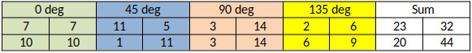
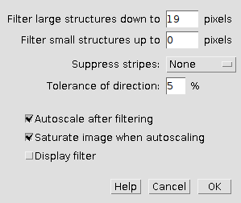
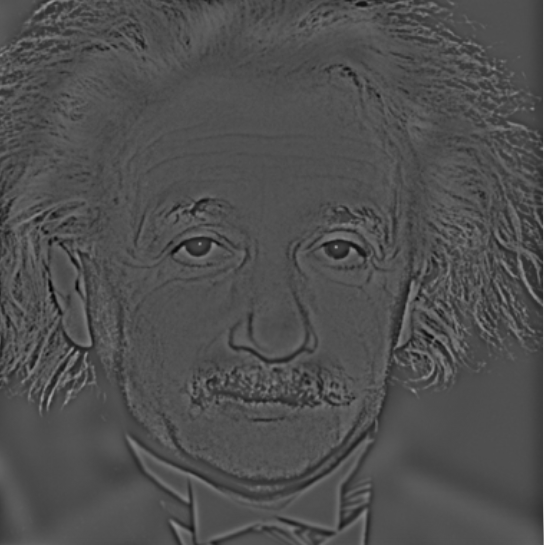
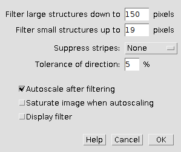
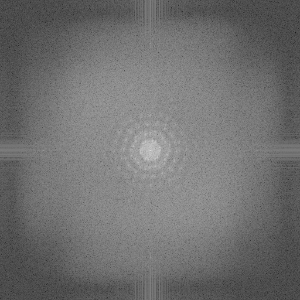
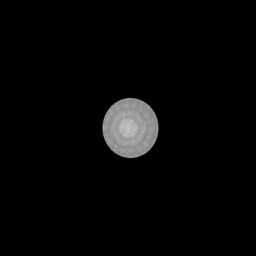
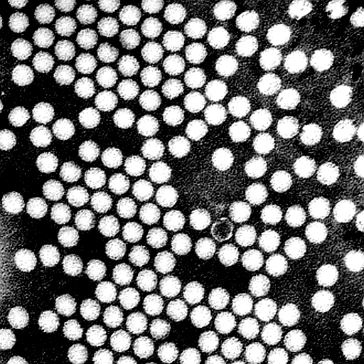

BMES 621: Homework 4
Homework 4 - Backprojection and FFT with ImageJ
We are considering an area of 2x2 (voxel) imaged by a projection technique (like x-rays in a CT) and are receiving the following numbers from horizontal (0 deg) , 45 deg, 90 deg and 135 deg projections:

The resulting sum of these projections is provided. Using backprojection, identify the background (bg) and normalization (n) values to calculate the underlying (and unknown) voxel intensity distribution leading to these projections (hint: consult ppt on reconstruction techniques).
Let \(P_0\), \(P_{45}\), \(P_{90}\), \(P_{135}\) represent the projection matrices and \(S\) represent their summation.
First, calculate \(bg\) and \(n\).
\[\begin{aligned} &\text{Row 1: }\qquad\frac{23-bg}{n} + \frac{32-bg}{n} = 7 &\qquad \Rightarrow 55-2bg = 7n \quad \text{(1)} \\ &\text{Row 2: }\qquad\frac{20-bg}{n} + \frac{44-bg}{n} = 10 &\qquad \Rightarrow 64-2bg = 10n \quad \text{(2)} \\ \end{aligned}\] \[\begin{aligned} \text{(2) - (1): }\qquad& 9 = 3n \quad \Rightarrow \quad n = 3 \\ \text{(1): }\qquad& 32-bg = 5n \quad \Rightarrow \quad bg = 32 - 15 \\ \\ \therefore\quad& bg = 17\\\quad& n = 3 \end{aligned}\]Original voxel intensity:
\[\begin{aligned} \frac{S-bg}{n} = \begin{bmatrix} \frac{23-17}{3} & \frac{32-17}{3} \\ \frac{20-17}{3} & \frac{44-17}{3} \end{bmatrix} = \begin{bmatrix} 2 & 5 \\ 1 & 9 \end{bmatrix} \end{aligned}\]Download the image “Einstein&Marilyn” available in the image folder in BBLearn.
- The first goal is to extract Einstein only using the FFT functionality. Document what you did.
- The second goal is to extract Marylin from this composite. Document what you did.
To extract the image of Einstein, I:
- Opened the image in ImageJ
- Applied a FFT bandpass filter to filter large structures down to 19px and small structures up to 0px
The settings used and image generated are shown below:


To extract the image of Marilyn, I:
- Opened the image in ImageJ
- Applied a FFT bandpass filter to filter large structures down to 150px and small structures up to 19px
The settings used and image generated are shown below:

Download the image “Poliovirus” from the image folder. The image is taken with an electron microscope.
- Viruses have a regular, well oriented structures that should be revealed by an FFT. Show the spectrum.
- The second step is to filter/mask the image in Fourier space, to clean up the image from background, noise and other artifacts, and enhance the appearance of the virus particles.
Hint: Filtering can be done by generating a “custom filter” through either thresholding of the FFT image or by using the edit tools to circle areas of maximal signal.
- The FFT spectrum of the image is shown below:

- We see a repeating circular pattern around the center of the FFT spectrum.
- Here, I applied a custom filter to the FFT spectrum. The custom filter and resulting image are shown below:

